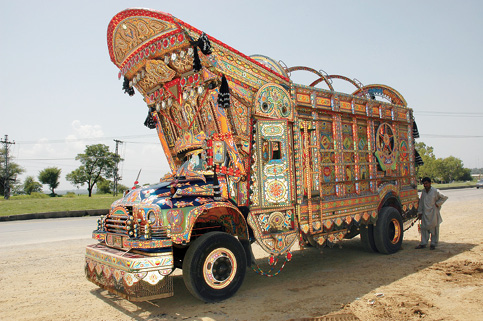

PAKİSTAN, 27 Temmuz
Aralıksız siren çaldı gece boyu. Bütün Pakistan ordusu ve güvenlik güçleri başkente gelmiş olmalı. Turist kamping alanındayız. Biz öğleden sonra çadır kurarken beş kişi olan polisler şu anda sanırım yirmi kişiyi buldu. Şimdi daha mı çok korkmalıyız, yoksa daha mı güvendeyiz? Canlı bomba saldırısı üzerinden saatler geçti.
Sıkıntı. Sanki bir şey yapabilecekmişim gibi uyanıp uyanıp dışarıya bakıyorum. Çadırın kapısında dik de duramadığımdan, yüzüstü yatıp ellerimi yumruk yaparak çenemin altına koyuyorum. Kafam yana düşecek gibi olduğunda uyanıyorum. İşte gün ağarıyor. İnsan her türlü tehlike içindeyken bile uyuyabiliyormuş demek ki.
Ne şans diye düşünüyorum sürekli. Aslında Türkiye’den ne kadar uzaktayız. İnsan kendini böyle kötü bir olayın içinde canlandıramıyor.
Alışveriş yapmak için seçtiğim yer ile ölüm arasında nasıl bir bağlantı olabilir ki. Polisler, seyyar bir TV kurmuşlar. Pek çoğu sabah haberlerini izliyor. Ölü sayısı 13’e çıkmış. Patlamanın olduğu yer gösteriliyor detaylıca. Ben ise tüm ayrıntısıyla hatırlıyorum patlamayı. Bombanın şok dalgasının bisiklet üzerinde beni ileri doğru ittirmesini, dengemin bozulmasını, neredeyse düşecek olmamı, sırtıma yapışan bisiklet formasını, refleks icabı arkamı döndüğümde 30-40 metre kadar arkamda gördüğüm, yükselen duman ve toz karışımını, aynı anda çalmaya başlayan sirenleri ve herhalde şehirdeki tüm kuşların havalandığı o anı aklımdan çıkarmam zor olacak. Yaklaşık 300 metre ilerideki kampa varınca, İnci’ye sarılmamı ve beni beklerken gözlerinde oluşan uçurum gibi korkuyu da elbette. Patlama anında kamp yerinden uçan onlarca kuş, onun hayallerini de alıp götürmüş gibiydi.
Domates aldığım adamla on saniye az konuşsak, para üstünü vermek için on saniye yavaş davransa ben de belki televizyonda söylenen sayının içinde olacağım.

Pakistan, Jhelum
Oyuncak değil gerçek kamyon.
Aslında düşününce, hepimiz için, bir müddet sonra alelade birer sayı haline gelmiyor mu bu tip saldırılarda ölenler.
Halbuki dün, Atatürk Caddesi’ni, Türk Elçiliği’ni, Türk mimar Vedat Dolakay’ın çizdiği Faysal Camiini görmüştük. Daha dün Pakistanlı polisler bize eskortluk yapıp otel aramışlardı kendi araçlarıyla. Nasıl da gülmüştük, az İngilizcemizle tarzanca anlaşmaya çalışmamıza. Nasıl da sarılmıştık, “Brother country” diyerek ayrılırken.
Yeni İslamabat’ın şantiye halindeki yollarına bakmış, Pakistan’ın geleceği için umutlanmıştık. Renkli kamyonları birbirimize göstermek için yarışıp durmuştuk İnci’yle.
Kamyonlarını bu kadar süsleyen insanların güzel günler hak ettiklerini ve bir gün elbette kavuşacaklarını düşünmüştük. Bisikletleri kilitlediğim ağaca, kapıda devriye gezen polise bakıyorum. Gözlerim kapanıyor arada istemsizce. Sirenler çığlık çığlığa yine. “Haber Türkiye’de duyulduysa endişelenmişlerdir ailelerimiz” diye geçiyor içimden. Geri dönmek fikrinin ilk kez ciddi olarak düşünüldüğü bir sabahı yaşıyoruz. İstanbul-İslamabat ne kadar uzak geliyor düşününce.
Bir bakıma da yakın. Uçakla dört saat sonra evdeyiz. Fakat İnci’nin yol boyu aklımızda olacak sözüyle tartışma noktalanıyor: “Yolculuğun bittiğini şartlar değil, biz söyleyeceğiz” ve ben not defterime yazıyorum büyük harflerle:
“DÖNMÜYORUZ”